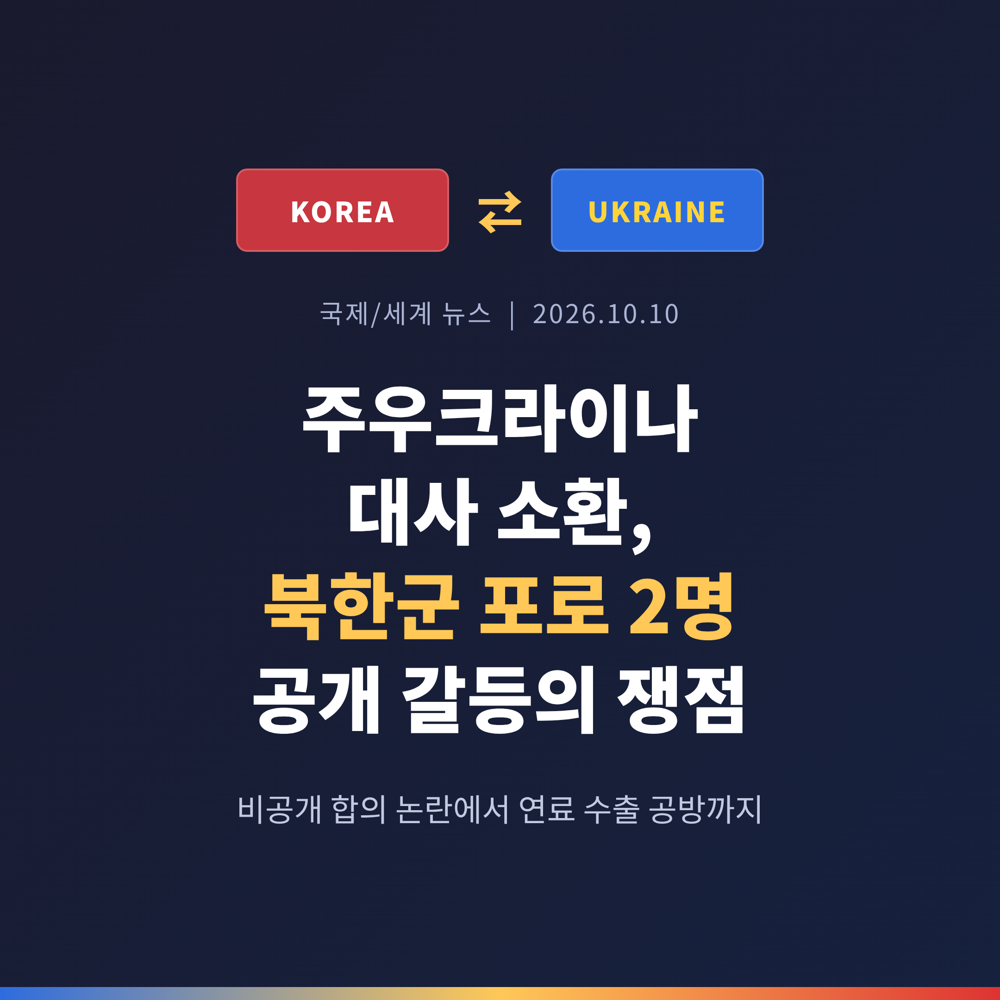
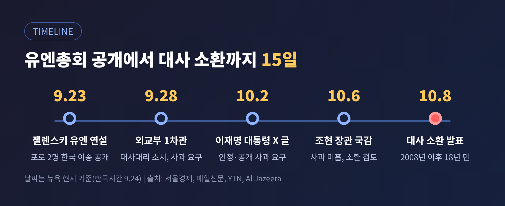
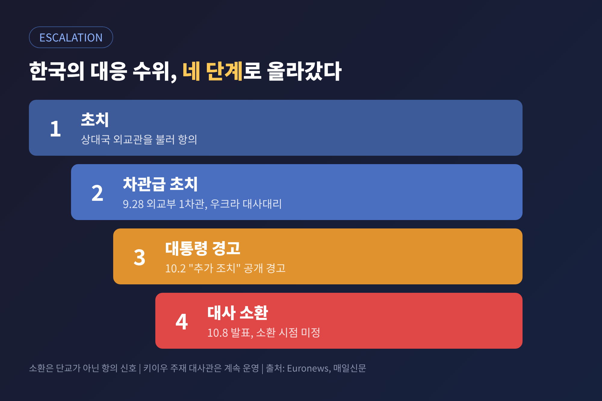
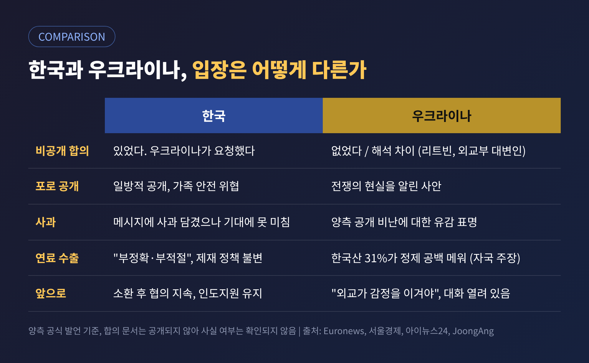
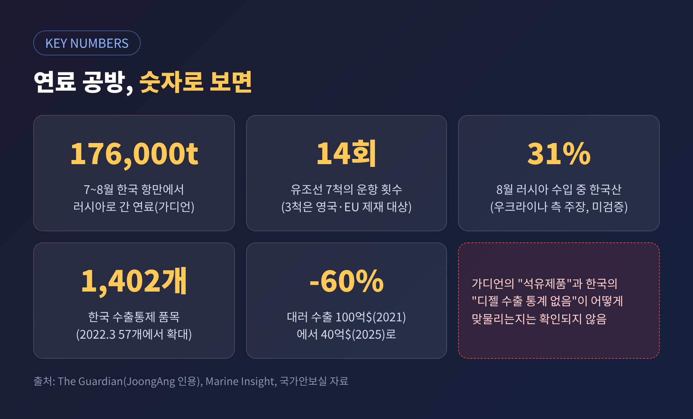
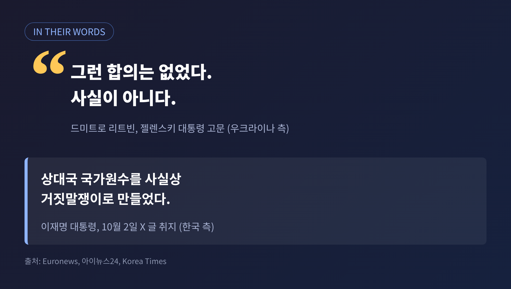

이번 글에서는 한국 정부가 10월 8일 주우크라이나 대사를 소환하기로 한 배경을 정리해 보겠습니다. 발단은 북한군 포로 2명의 한국 이송을 둘러싼 비공개 합의 논란입니다. 여기에 러시아행 연료 수출 공방까지 겹치면서, 두 나라 관계는 전쟁 지원국과 수혜국이라는 단순한 틀을 벗어나 있습니다.
핵심만 먼저 말씀드리면 이렇습니다. 한국은 "비공개로 합의한 사안을 우크라이나가 일방적으로 공개했다"고 주장합니다. 우크라이나는 "그런 합의는 없었고, 외교적 오해일 뿐"이라는 입장입니다. 쟁점은 합의의 존재 여부, 그리고 사과의 수위입니다.
사건의 출발점은 9월 23일(뉴욕 현지 기준)입니다. 볼로디미르 젤렌스키 우크라이나 대통령이 유엔총회 연설에서 북한군 포로 2명을 한국으로 보냈다고 밝혔습니다. 국내 방송은 이를 "우리는 북한 전쟁 포로 두 명을 대한민국으로 보냈습니다"라는 발언으로 전했습니다. 한국 시간으로는 24일이어서, 기사마다 날짜가 하루 다르게 적혀 있습니다.
한국 정부의 반응은 단계적으로 높아졌습니다.

외교부는 "양국 현안이 원만히 해결되기를 기대하며 우크라이나와 협의를 계속하겠다"고 밝혔습니다. 소환은 단교가 아니라 강한 항의의 신호라는 뜻입니다.
대사 소환은 외교 수단 가운데서도 무거운 편에 속합니다. 상대국 외교관을 불러 항의하는 초치보다 한 단계 위로 봅니다. 서울경제와 매일신문 등은 한국이 해외 공관장을 외교 분쟁으로 소환한 것이 2008년 7월 이후 약 18년 만이라고 전했습니다. 당시에는 일본이 중학교 사회 교사용 지도서에 독도 영유권 주장을 담은 데 항의해 주일대사를 불러들였습니다.
예전에는 일본과의 역사 갈등이 소환의 사유였습니다. 지금은 전쟁 중인 나라, 그것도 한국이 인도적 지원을 이어 온 나라가 상대입니다. 이 점이 이번 조치를 더 눈에 띄게 만듭니다.
한국이 지금까지 우크라이나에 건넨 인도적 지원은 2022년 이후 누적 약 4억 4,500만 달러입니다(알자지라). 이재명 대통령은 7월 젤렌스키 대통령과 만나 1억 달러 지원을 약속하기도 했습니다. 관계가 얕은 것이 아니었기에, 소환의 무게도 그만큼 커졌습니다.

두 사람은 2025년 1월 러시아 쿠르스크 전선에서 우크라이나군에 붙잡힌 북한군 병사입니다. 약 1만 명 규모로 알려진 북한군 파병 병력의 일부입니다. 2025년 초 언론 인터뷰에서 두 사람은 한국행을 원한다고 밝혔습니다.
이송은 순탄하지 않았습니다. 7월 2일 코리아중앙데일리는 한 소식통을 인용해, 러시아가 이들을 돌려주면 우크라이나인 수천 명을 석방하겠다는 교환안을 내놓았고, 이것이 이송을 1년 넘게 지연시켰다고 전했습니다. 키이우로서는 두 사람이 협상 카드가 될 수 있었다는 뜻입니다. 한국은 본인 의사에 따라 오는 경우에는 받겠지만, 교환 같은 거래 방식은 꺼린다는 입장이었습니다.
두 사람은 9월 중순 한국에 도착했습니다. 한국 정부가 비공개를 고집한 이유는 가족입니다. 북한에서는 귀순자나 포로가 된 병사의 가족이 처벌받을 수 있다는 것이 한국 정부와 여러 해외 매체의 공통된 설명입니다. 앤드루 여 가톨릭대 교수는 TIME 기고에서 연좌제로 가족이 최대 3대까지 보복당할 수 있다고 적었습니다. 병사 가운데 한 명이 자살을 시도했다가 우크라이나 의무병이 막았다는 보도도 소개했습니다.
한국 정부는 이들이 헌법상 대한민국 국민이라는 입장입니다. 한국행을 원하면 모두 받고, 본인 뜻에 반하는 강제 송환은 하지 않는다는 원칙도 우크라이나에 전달했다고 설명했습니다.
국제 사안인 만큼 두 나라의 주장을 나란히 놓고 볼 필요가 있습니다.

한국은 비공개가 포로와 가족 보호를 위해 우크라이나 쪽 요청으로 합의된 것이라고 말합니다. 이 대통령은 합의 자체를 부인한 것이 상대국 정상을 "거짓말쟁이"처럼 보이게 만들었다는 취지로 비판했습니다.
우크라이나의 설명은 다릅니다. 젤렌스키 대통령 고문 리트빈은 "그런 합의는 없었다. 사실이 아니다"라고 말했습니다. 안드리 시비하 외교장관은 이를 "외교적 오해"로 규정하며 빠른 해결을 바란다고 했습니다. 우크라이나 외교부 대변인은 10월 7일 비밀 유지 방식에 대한 해석 차이가 원인이라며, 외교 채널로 협의 중이라고 했습니다. 사과 메시지도 위법을 인정한 것이 아니라, 양측이 서로 공개 비판한 데 대한 유감 표명이라는 취지로 전해집니다.
한쪽 말만 옮기면 이 사건은 이해되지 않습니다. 합의 문서가 공개된 바 없어서, 누구 말이 맞는지는 현재로서는 확인되지 않습니다.
여기에 감정의 골을 깊게 한 발언이 있었습니다. 9월 27일 키릴로 부다노우 우크라이나 대통령실 비서실장은 비무장지대(DMZ) 지뢰 폭발을 언급하며 남북 무력 충돌이 시간문제라는 취지로 말했다고 전해집니다. 이 대통령은 한반도 전쟁을 바라는 듯한 언행이라며 심각한 유감을 표했습니다. 포로 문제가 안보 발언으로 번진 순간입니다.
갈등은 10월 6일 새 국면을 맞았습니다. 영국 가디언이 항만 기록과 선박 추적 자료를 토대로, 한국 항만에서 러시아로 석유제품이 대거 실려 갔다고 보도한 것입니다.
보도에 따르면 유조선 7척이 7~8월 울산과 여수 등에서 14차례 운항하며 17만 6,000톤 넘는 연료를 실어 날랐습니다. 대부분 디젤이었고, 3척은 영국·EU의 제재 대상이었습니다. 다만 가디언은 이 거래가 "한국 법을 위반한 것으로 보이지는 않는다"고 평가했습니다. 연료의 소유·판매 주체도 분명하지 않습니다.

같은 날 블라디슬라프 블라시우크 우크라이나 대통령 제재정책 특별대표가 이 보도를 인용했습니다. 그는 8월 러시아의 해상 석유제품 수입 36만 8,000톤 중 11만 2,000톤, 즉 31%가 한국산이라고 주장했습니다. 우크라이나의 정유시설 타격으로 생긴 공백을 한국산 연료가 메웠다는 것입니다. 이 31%는 우크라이나 측 수치이며 독립적으로 검증되지 않았습니다.
한국 대통령실은 10월 7일 이 주장을 "정확하지 않고 부적절하다"고 반박했습니다. 근거는 개별 거래만으로 당사자와 원산지, 최종 구매자를 확인할 수 없다는 점입니다. 대통령실은 대러 제재 정책이 변함없고, 문제가 확인되면 조치하겠다고 밝혔습니다.
한국 국가안보실 자료는 이렇습니다. 수출통제 품목은 2022년 3월 57개에서 2024년 6월 1,402개로 늘었습니다. 디젤·휘발유·항공유는 그 목록에 없고, 통계상 2025년부터 올해 8월까지 이 품목의 대러 수출은 없다고 합니다. 한국의 대러 수출은 2021년 100억 달러에서 2025년 40억 달러로 60% 줄었습니다.
가디언의 '석유제품 17만 6,000톤'과 한국의 '디젤 수출 통계 없음'이 어떻게 맞물리는지는 지금까지 보도로는 풀리지 않습니다. 제3국 경유나 품목 분류 차이일 수 있으나, 이는 추측일 뿐 확인된 바는 없습니다.
우크라이나 쪽도 한국의 제재 이력을 한쪽으로만 평가하지는 않았습니다. 블라시우크 대표는 조기 수출통제 동참과 통제 품목 1,402개 확대를 긍정 평가했습니다. 반면 가격상한연합에 가입하지 않았고, 러시아산 석탄과 LNG를 계속 사들였다고 지적했습니다.
첫째, 북한 변수입니다. 북한 국영매체는 두 포로에 대해 침묵하고 있습니다. 여 교수는 이재명 정부의 대북 기조, 곧 공존과 신뢰 회복을 내세운 대화 노선이 포로 수용과 충돌할 수 있다고 짚었습니다. 한편으로 북한군이 러시아에 더 파병될 수 있다는 젤렌스키 대통령의 경고도 나와 있습니다. 앞으로 귀순자와 포로가 더 생길 가능성이 있다는 뜻입니다.
둘째, 우크라이나의 계산입니다. 우크라이나는 2022년부터 한국에 패트리엇 요격체와 155mm 포탄 등 살상무기 지원을 요청해 왔습니다. 여 교수는 포로 공개가 한국의 지원을 끌어내려는 지렛대로 읽힐 수 있다고 해석했습니다. 이는 해석이며, 우크라이나가 공식적으로 그런 의도를 밝힌 것은 아닙니다.
셋째, 선례가 없다는 점입니다. 포로와 귀순 희망자를 다루는 절차가 두 나라 사이에 문서로 정리돼 있지 않았습니다. 그러니 구두 합의의 해석을 두고 다툼이 벌어진 것입니다.
국내 평가는 엇갈립니다. 박병환 유라시아전략연구소 측은 우크라이나의 맞대응 가능성을 짚으며 차분한 대응을 주문했다고 전해집니다. 전직 고위 외교관은 포로 이송이라는 외교적 성과가 정상 간 갈등에 가려지고 있다며, 추가 포로 이송과 재건 사업에서 협력이 여전히 필요하다고 말했습니다. 공개 설전과 소환이 향후 협상 여지를 좁힐 수 있다는 우려도 있습니다.
지켜볼 대목은 네 가지입니다.
앤드루 여 교수는 이 마지막 대목에 해법이 있다고 봅니다. 그는 자발적 정착만 허용하고, 포로의 신원을 보호하며, 공정한 인도주의 기구가 비공개로 접견하고, 정부나 정보기관의 압력 없이 독립 면담을 하고, 강제 송환은 금지하고, 당사자 동의 없이는 이송을 공개하지 않는 프로토콜을 제안했습니다.

정리하면 이렇습니다. 이번 갈등은 두 나라가 포로 2명을 바라보는 시선의 차이에서 시작됐습니다. 한국에는 가족의 안전이 걸린 문제였고, 우크라이나에는 전쟁의 현실을 세계에 알릴 사실이었습니다.
누가 옳은지는 합의의 실체가 드러나야 가려집니다. 그전에 필요한 것은 양국이 같은 규칙으로 다음 사례를 다룰 장치입니다.
"포로 한 명의 안전은 비밀의 무게로 지켜집니다."
그 비밀을 지킬 약속이 서로 다르게 기억되는 한, 외교의 진짜 비용은 두 사람의 앞날이 치르게 될지 모릅니다. 이 갈등이 협력의 기억으로 남기를 바라는 것은 지나친 기대일까요.
참고: TIME(10/9), 알자지라(10/8), 유로뉴스(10/8), 서울경제(10/9), 메두자·연합뉴스(10/8), YTN(10/8), 매일신문(10/8), 아이뉴스24(10/6), 코리아중앙데일리(7/2, 10/7), 코리아타임스(10/2), 마린인사이트 등. 일부 인명·일자는 매체마다 표기가 달라 다수 보도 기준으로 적었습니다.